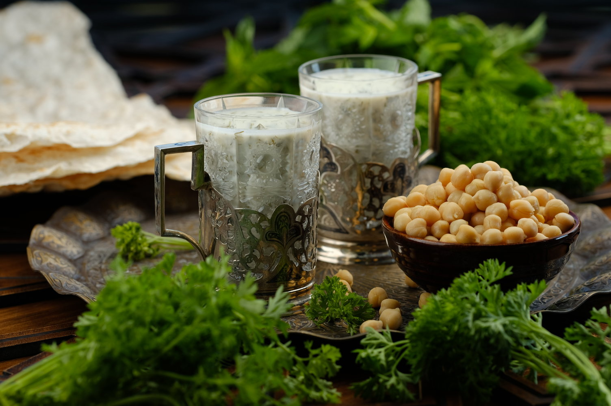
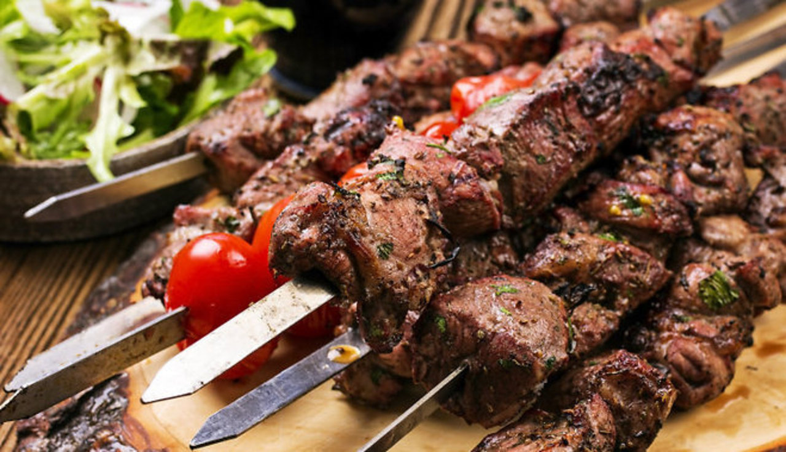
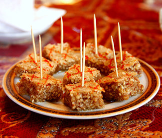

.jpg)
Azərbaycanın Milli Mətbəxi
Azərbaycan milli mətbəxi dedikdə ilk öncə ağlımıza dünyanın qədim, zəngin və ləzzətli yeməkləri ilə bol olan bir mətbəx gəlir. Azərbaycan mətbəxində 2000-ə yaxın xörək məlumdur. Əlbətdəki bu mətbəxi dəqiq araşdırmaq çoxda asan deyil. Azərbaycan milli mətbəxi təkcə xörəklər, onların hazırlanma texnologiyasının üsulları deyil, həm də maddi mədəniyyətin əsas hissələrindən biridir. Milli mətbəximizin tarixi də elə xalqın tarixi qədər qədimdir. Kulinariyamız öz tarixi kökləri və özünəməxsusluğu ilə o birilərindən xeyli fərqlənir. Azərbaycan xörəkləri yüksək dad-tam keyfiyyətləri ilə dünyada məşhurdur. Onları başqaları ilə qarışıq salmaq olmaz. Azərbaycan xörəkləri dadı və hazırlanması, həmçinin tünd ədviyyə və tamlı əlavələr qatılmasına görə daha çox Şərq mətbəxinə yaxındır. Hazırda Azərbaycan kulinariyasında xörəkləri hazırlanmasının qədim üsullarının spesifik xüsusiyyətləri saxlanılmaqla yanaşı, müasir kulinariyanın tələbləri geniş sürətdə nəzərə alınır. Milli xörəklərimizin əksəriyyəti mal, qoyun və quş ətindən hazırlanır. Döyülmüş ət ilə hazırlanan xörəklər daha çox məşurdur.

Dovğa
Kabab
Dolma
Şəki halvası